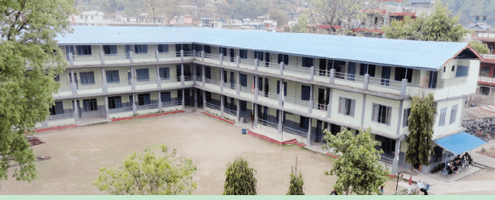
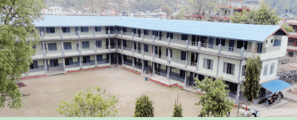
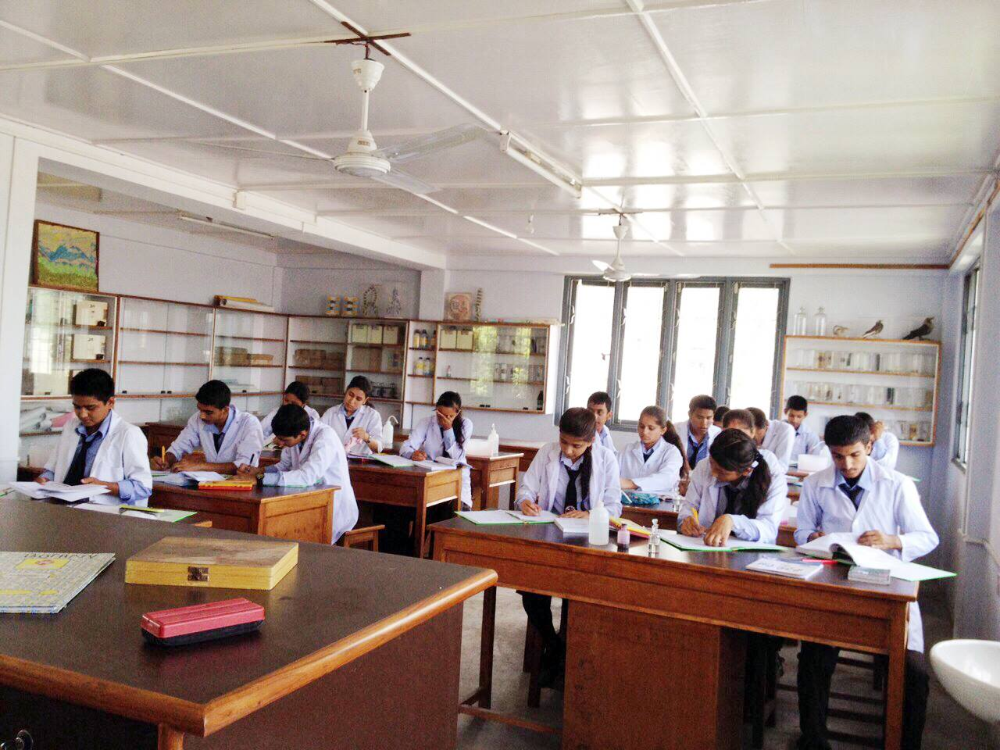
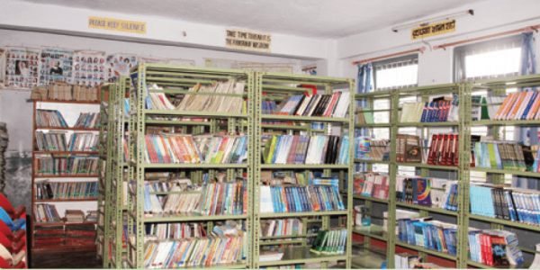
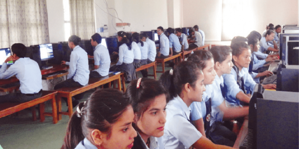

Refresh
 About-School / AboutEducation
Located in the South-Western part of Pokhara valley, Chhorepatan Secondary
School is one of the leading institutions in and around the valley. In more than a
decade-long journey, CSS has been able to prove itself as a milestone with
academic identity in Pokhara. To meet the needs of quality education in
secondary education, CSS had been upgraded to XI & XII in 2055 B.S. with
Humanities and Social Sciences stream. Later on, Management and Education
streams were launched in 2056 and 2061 B.S. respectively in response to the
cordial demands of the parents and students. Our successful expansion has
been further marked by the addition of the science stream in 2066 B.S. The
quality of the science stream is evidenced by a 90+ pass percentage in 2073,

About-School / AboutEducation
Located in the South-Western part of Pokhara valley, Chhorepatan Secondary
School is one of the leading institutions in and around the valley. In more than a
decade-long journey, CSS has been able to prove itself as a milestone with
academic identity in Pokhara. To meet the needs of quality education in
secondary education, CSS had been upgraded to XI & XII in 2055 B.S. with
Humanities and Social Sciences stream. Later on, Management and Education
streams were launched in 2056 and 2061 B.S. respectively in response to the
cordial demands of the parents and students. Our successful expansion has
been further marked by the addition of the science stream in 2066 B.S. The
quality of the science stream is evidenced by a 90+ pass percentage in 2073,

SALIENT FEATURES
What do we offer?
• Modern and up-to-date infrastructures with ample resources
• The first community school to run computer science classes in Pokhara
• Provision of various scholarship to the deserving (toppers, economically deprived and underprivileged) students
• Coursework in both English and Nepali medium
• Outstanding position among community-based high schools.
• Highly experienced, trained, and dedicated teachers
• Students graduated in Science from CSS, the community school, will have a better opportunity to achieve a scholarship in MBBS and BE in TU, KU, and PU
• Ideally located amidst sites of natural-cultural importance like Davie’s Fall and Gupteshwor Cave
• Round the clock Internet facilities (Wi-Fi)
Education
Education is the main motto of any school that's why every school must provide the best Education With the latest tech. That is what our school do. Provides quality education to more than 2000 students with 40+rooms and hall 90+ teachers being the best school of Pokhara and top of Nepal Our school is famous for its education quality and highly qualified staffs and highly advanced tech. Education is an important aspect of our life its like money which is needed for everything from clothes to food. Education and human life are interrelated with each other one is nothing without education. In these modern days of our life, the quality of education is high somewhere than low somewhere. Our school is taken as the best school in quality of education provided there. Our school got a very high ratio of students who are very success full with their life. Our school got very highly talented and skilled teachers/staff who are so friendly and nice which cant be explained. Our school look for every field of education from science to management, computer to education etc.
To ensure the quality education We Have -
Science-Lab
Resourceful labs each for Physics, Chemistry,
Botany, and Zoology. Spacious rooms having
various specimens and equipment.

library
Ever-expanding library with sufficient
textbooks as well as reference materials in
various subjects.

Computer Lab
Sophisticated computer lab, Adequate software
resources, and the latest hardware accessories
for sufficient practical exposure to the students.

Ctedits-Text and is inspired by CPSS Website(only text)